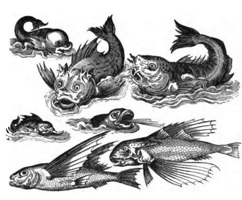
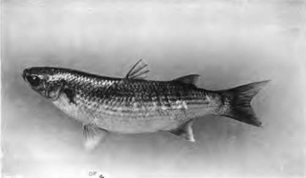
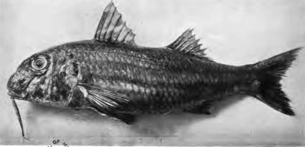
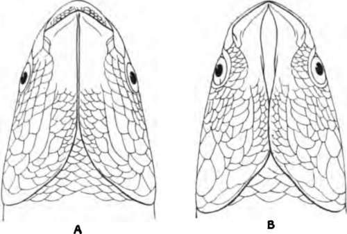

Chapter XXIV. British Sea Fish. The Grey Mullets (Mugii)
Description
This section is from the book "Fishing", by Horace G. Hutchinson. Also available from Amazon: Fishing.
Chapter XXIV. British Sea Fish. The Grey Mullets (Mugii)
The fishes of this genus are easily recognised by their feebly compressed body and short, rounded head, both covered with large, strongly overlapping scales; the infcro-lateral eyes, better visible from below than from above; the absence of a lateral line; the small transverse mouth, furnished with small or setiform teeth; the presence of two dorsal fins, the first formed of 4 or 5 spinous rays, the second, opposed to the anal, formed of a few branched rays; the shortness of the pectoral fin, which is inserted rather high up the side, and the position of the ventral fins about midway between the bases of the pectoral and first dorsal fins. These ventral fins are neither free from the pectoral girdle, as in Belone and salmon, pike, and carp, nor attached to the clavicles, as in perches; the bones on which they are inserted are suspended from a pair of long, rod-like bones, the so-called post-clavicles, which descend from the shoulder. In other respects, too, it may be said that the Mugilida, now placed among the Persesoces, hold an intermediate position between the soft-rayed and the spiny-rayed fishes, as we have mentioned above h propos of the gar-fish.
The branchial apparatus of these fishes is peculiar for the presence of series of long, closely-set appendages or gill-rakers on the concave side of each gill-arch, these gill-rakers curved inwards and meeting similar appendages inserted on the mucous membrane of the pharynx, to form a sort of filtering apparatus by which the thicker matter engulfed by the fish is retained in the mouth, whilst the water is expelled through the gill openings; for the Mullus feed to a great extent on diatoms in mud and on decayed animal and vegetable substances. In consequence of this regime the gut is extremely elongate, coiled up in numerous convolutions. But they also consume great quantities of bivalve and univalve mollusca, to crush the shells of which the stomach is provided with a thick-walled muscular appendage much like the gizzard of a bird.
51.- Grey Mullet.
52. - Red Mullet
Most of the grey mullets are sea fishes, but resorting in preference to estuaries and marshy ponds, where they spawn, and also ascending rivers beyond tidal influence. They are sometimes kept, and breed in fresh-water ponds. All arc remarkable for their agility and their habit of constantly leaping over the surface of the water.
The genus Mullus is of almost world-wide distribution. About eighty species are known, three of which occur in the British islands :-
1. The thick-lipped grey mullet (Mugil chelo).
2. The golden grey mullet (M. auratus).
3. The thin-lipped grey mullet (M. capita).
As these species are often confounded, and as much remains to be done in ascertaining their exact distribution on our coasts, it is necessary to enter somewhat fully into their distinctive characters.
The first species, M. chelo, which appears to be the commonest, is remarkable for its thick upper lip, often beset with large wart-like papillae on its inferior half; the diameter of the upper lip, in the middle, in the adult is more than half that of the eye; the chin is entirely covered by the bones of the lower jaw, or they leave between them only a very narrow strip uncovered. The pectoral fin measures at least three-fourths the length of the head, and there is no free scale above its axil.
M. auratus is intermediate between the preceding and the following species. The upper lip is thin, its diameter not more than half that of the eye, and hardly projects beyond the cleft of the mouth, which is nearly terminal; the rami of the lower jaw leave a lanceolate space on the chin uncovered. The pectoral fin measures at least three-fourths of the length of the head, and there is no free scale above its axil.
Lower View of Head of (A) Mugil chelo; (B) M. capito.
In M. capito the upper lip is even thinner than in M. auratus, its width always much less than half the diameter of the eye; there is a lanceolate naked space on the chin as in M. auratus. The pectoral fin is shorter than in either of the preceding species, and a free scale is present above its axil.
The three species are similarly coloured, grey, or greyish brown, above, silvery white below, with more or less distinct dark streaks following the series of scales. But M. auratus is distinguished by the presence of a golden spot on the gill-cover, whence the name, " golden grey mullet."
The thick-lipped grey mullet reaches a length of three feet, and is, according to Mr. J. T. Cunningham, the only species commonly found at Plymouth; it is also the one most frequently sold on the London market. The two other species do not exceed a length of two feet. M. capito is on record from Scotland, the south coast of England, and Ireland; it has a very extensive distribution, occurring from the coasts of Scandinavia all along the Atlantic to the Cape of Good Hope, being also found in the Mediterranean and the Lower Nile.
M. auratus, which has nearly the same distribution, but is not known to occur south of the mouth of the Congo, where it is common, is sometimes sold in the London market, and specimens from Cheltenham are preserved in the British Museum, from the collection of the late Mr. Francis Day, who confounded this species with M. capito in his work on British fishes.
It is much to be desired that anglers should pay due attention to the distinctive marks of these three kinds of grey mullet, in order to throw more light on their distribution on our coasts.
Continue to: